0. Introduction
You will make a landscape in the program, Gaea, to import into Unreal.
This is so you can incorporate a particular automaterial (made by a savvy group on Fab) that will dress your Unreal landscape.
With this, you can explore the various ready-made environment actors - sky, fog, direct light, and skylight to make a sunset.
Learning Objectives
Develop working knowledge of Unreal fundamentals:
- Heightmaps in Gaea
- Landscapes
- Automaterials - for grass, rock, and snow layers
- Sky, sun, and atmospheric configuration
- Set up the player character for basic navigation and presentation
1. Gaea
Download and install the free version of Gaea from quadspinner.com/download.
Create a new project before exploring the controls:
- WASD — navigate
- Alt + Left Mouse — orbit
- Alt + Right Mouse — zoom
Add a Terrain > MountainRange node and experiment with its settings.
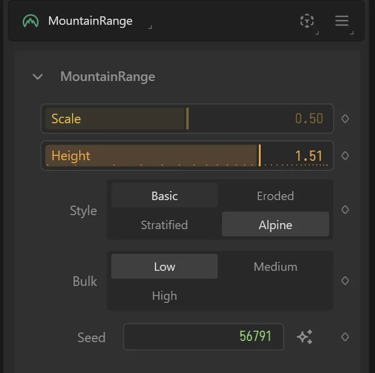
Add a Terrain > Crater node (or another terrain type) to the right and connect the two. Finally, add an Output > Unreal node.
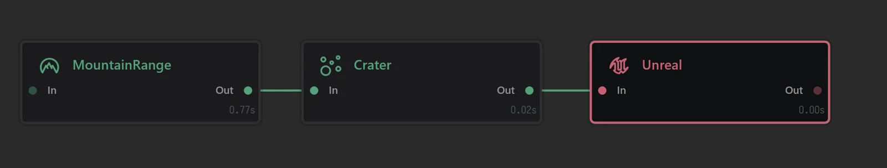
With the Unreal node selected:
- Set Format to
R16 - Choose a Build Destination with the 3 dots button.
- Click Build (the green button at the top-left).
- If it asks, don’t close Gaea. And don’t save cache.
- Note two files: the .terrain and the .r16 file.
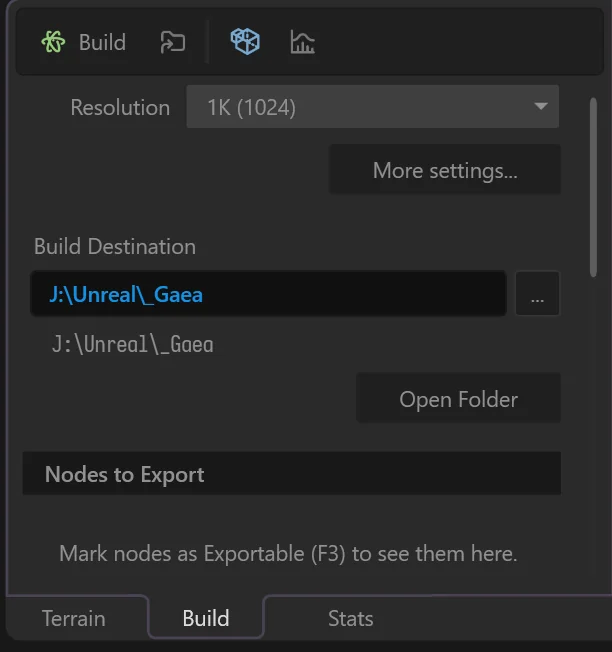
2. Unreal Project
Create a new Unreal project choosing the First Person template, or continue with an existing project. (For details on this, see Step 1 of UE Tutorial 101 - A Floor Plate Opens A Door)
In the Content Browser, make a new folder: Content/Landscape/.
Using Windows/OSX, copy the two files generated by Gaea and place them in the project’s Content/Landscape/ folder. Yes, do this in Windows/OSX, not Unreal’s Content Browser.
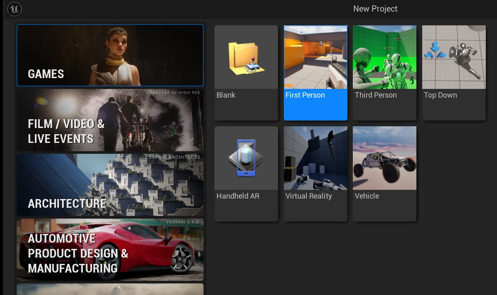
3. MW Automaterial Download
Download and import the MW Landscape Automaterial from fab.com/s/0c488c6f4347 via the Epic Launcher.
Confirm success by checking Content/MWLandscapeAutoMaterial/ in your Content Browser.
4. Create a Landscape (in Unreal)
Make a New Level > Basic.
Hold On: If you are new to Unreal, become familiar with basic viewport navigation UE Editor Navigation
Delete the floor actor.
Switch to Landscape Mode.
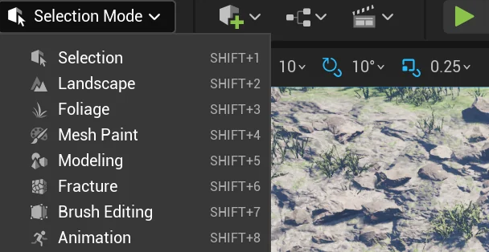
In the resulting Landscape panel (see image below), choose the Manage tab, the New button, and the button Import From File.
In the Landscape panel, for Heightmap File, choose the .r16 file built from Gaea.
Tip: Before choosing the Material (AutoMaterial), there is a middle step.
Look in the Content Browser: Content/MWLandscapeAutoMaterial/Materials/Landscape Right-click to Duplicate of one of those 3 AutoMaterials. Rename that new one in order to recognize it by your name, when searching. (Mine is “MTL_MWAM_Landscape_MountainRange_Peter”)
Back to the Landscape panel. For Material, search for your new AutoMaterial.
Overall Resolution: 1009x1009.
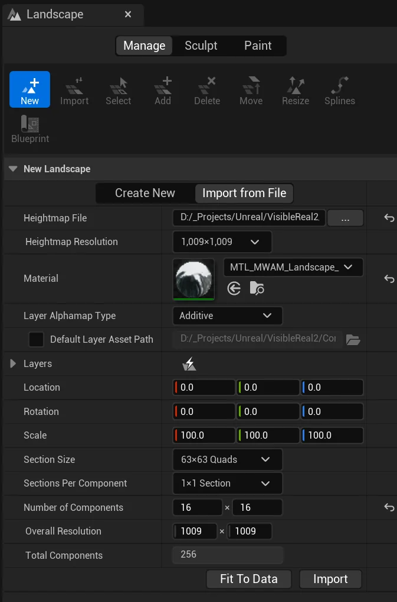
Before continuing, look at the resulting green wire mess in the level. In the same Landscape panel, the scale can be changed. The Z value is most relevant - changing height of your overall terrain. In a later endeavor, this setting might be consequential.
Click Import
5. AutoMaterial
A. Sculpt
Navigate your scene to observe the terrain.
Back in the Landscape window, choose Sculpt>Sculpt. Click on the terrain and also shift-click to see it shape upwards and downwards. Tune Brush Strength and Brush Size.
Observe what happens. This AutoMaterial draws grass, rock, and plants at particular heights and slopes.
B. Parameters
Time to control those details. In the Content Browser, open (double-click) your MWAutoMaterial file incorporated from Content/MWLandscapeAutoMaterial/Material/Landscape.
Tune MW_GrassMaxWorldPosition until grass appears higher up the mountain slopes. Perhaps you have to choose a positive or negative number to see changes. Understand that steep slopes might not be effected. Change the snow’s MW_SnowWorldPosition to, say, -100000.0.
And now, choose any of the parameters to experiment with, until you get worthwhile results.
This video gives context and details: https://www.youtube.com/watch?v=l9O0yV9EHeM The video points out that MW_SnowSlopePower (or Grass) controls whether grass can grow on particular steep areas. Try values between 0.1 and 5.
Want to make water appear? Small or large puddles? Try MW_WaterSlopePower.
SAVE ALL
6. Player Point of View
Let’s tune how we see and play when playing the level.
Return to Selection Mode.
We want to spawn the player where your camera is positioned currently the editor.
Click on those 3 dots shown in the image, to find Current Camera Location in the viewport dropdown. This will spawn the player at your current camera position.
Play the game.
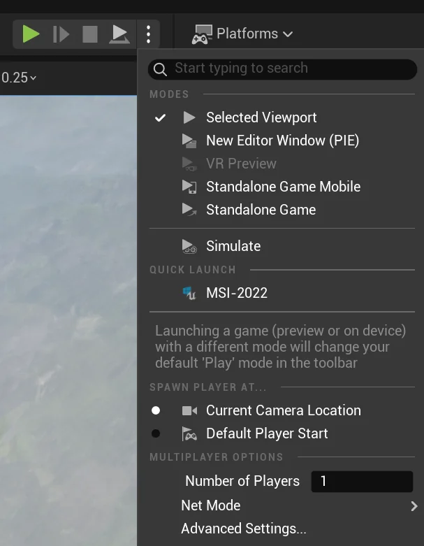
7. The Sky and Sun
Time to create a visually interesting sunset. Let’s learn the significant parameters that make this possible.
In Unreal, the Outliner lists the actors in the level. Because this level is new, these actors represent the default list provided in new levels. Focus your attention on the actors in the Lighting folder.
Delete SM_SkySphere.
Select ExponentialHeightFog and - in Details - set Fog Density to 0.0001 to functionally disable it (for now).
Tip: By the way, get used to searching for keywords in the Details search. Unreal is so vast; many of its interfaces work best by searching for terms.
With fog momentarily taken out of the mix, time to pay attention to 3 additional actors.
Rotate the Directional Light to put the sun in the horizon. (When the sky begins to dim, your rotation values are going in the correct direction). Do you see the sun in the distance?
Search the Directional Light’s Details for Source Angle. Type - (yes type) - a value of 10 to make the sun large.
Adjust SkyAtmosphere parameters:
Mie AnisotropyandMie Exponential Distribution— controls atmospheric glowRayleigh Scattering Scale— try0.06or0.2; experiment with color values- Absorption. Change the color? (Wait 5-10 second after an adjustment. The change is gradual).
Back to ExponentialHeightFog. Restore Fog Density to 0.001. Or 0.002. And Fog Height Falloff to 0.004.
Getting visual nuance from fog often requires taking advantage of Second Fog Data, which functionally lets you add another fog with different parameters.
ExponentialHeightFog:
- Fog Density:
0.001or0.002 Fog Height Falloff:0.04- Use
Second Fog Datafor additional atmospheric layering
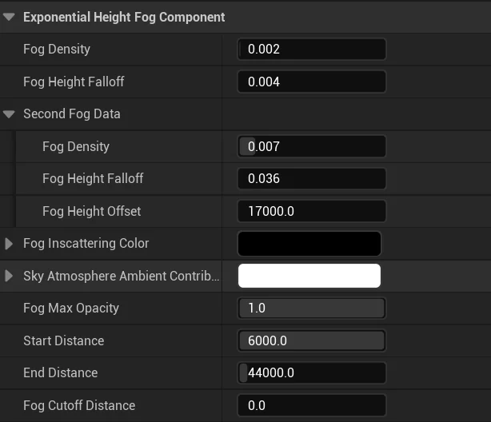
See how Second Fog Data lets you thicken the fog on the distant mountains?
8. Player’s Avatar is in the Way
This next concern has nothing inherently to do with this lesson.
So far, during play, when you look down you will see the avatar’s hands. This avatar is called a mannequin. (Or if you initially chose the Third Person template - the mannequin will be primary in your view). Removing the mannequin’s visibility is a good idea until you have a worthwhile player character to incorporate.
In the Content Browser, search for BP_FirstPersonCharacter and open it.
Tip: When searching the Content Browser, pay attention to what folder is selected on the left. That selection controls the scope of your search.
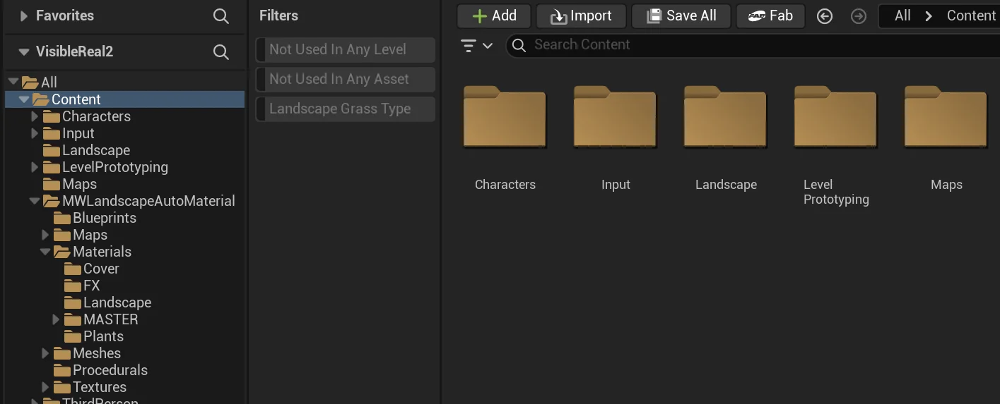
In BP_FirstPersonChracter’s the Viewport tab, select FirstPersonMesh from the Components panel. In Details, uncheck Visible.
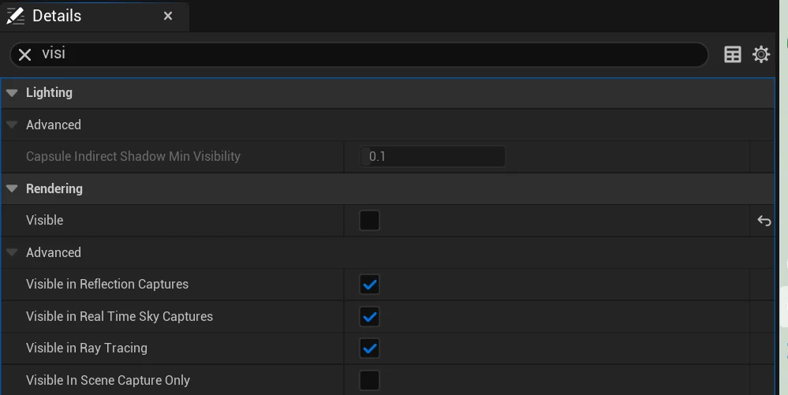
Compile
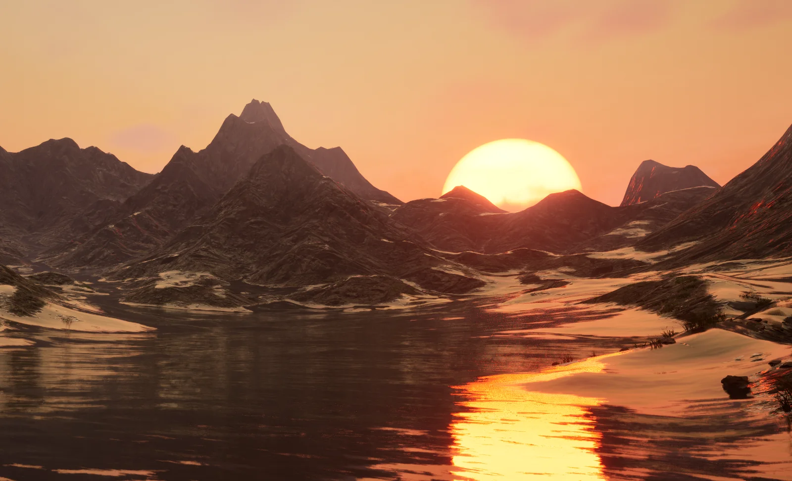
9. Map View
To get a screengrab of the a large section of the terrain - something like a “map-view” - move the camera high above and look down.
Rotate the Directional Light to remove shadows.
Turn off ExponentialHeightFog and SkyAtmosphere.
See in the image below, change the Perspective camera’s Field of View to a low number, like 10. This will flatten the image.
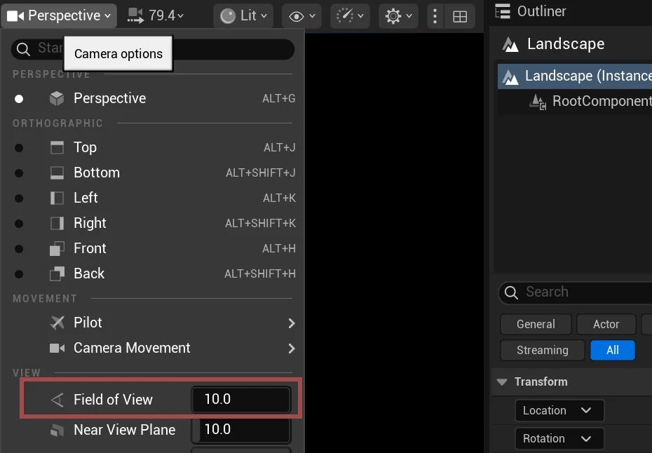
And to capture an image - below the Field of View setting you just changed, find High Resolution Screenshot. Increase Screen Size Multiplier to 2, to get a large image?
When you capture, a small popup will appear at the bottom-right, pointing you to the captured image’s file location, probably your project’s \Saved\Screenshots\
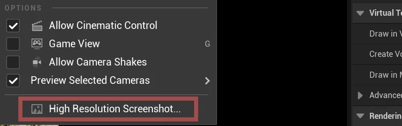
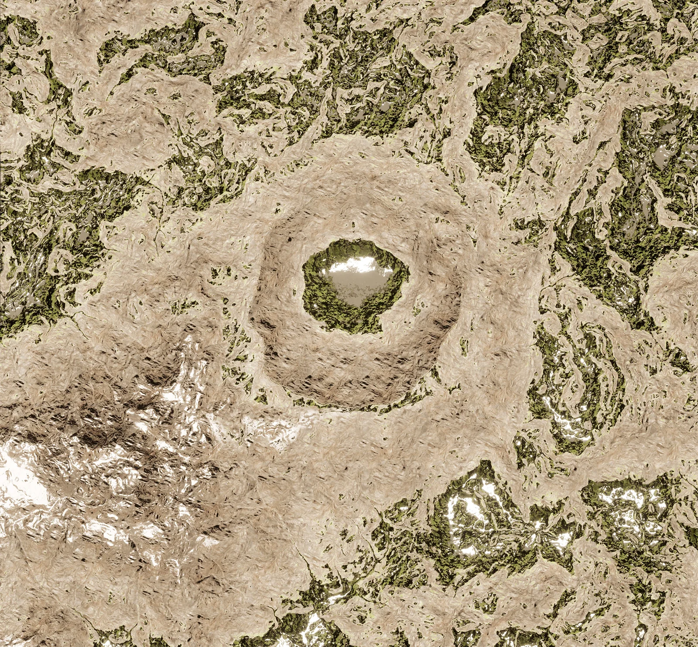
What you can now build
- A landscape terrain generated from a heightmap designed in Gaea (mountains, craters, valleys)
- Grass, rock, and snow layers that apply automatically based on elevation and slope angle
- A sunset or atmospheric sky — sun position, haze, fog layering, Rayleigh scattering
- A high-resolution overhead map view for documentation or in-game reference
- A playable landscape level where the terrain, lighting, and atmosphere work together as a unified environment
Example deviations you are ready for
- A different terrain type — swap the Gaea nodes (rolling hills, canyon, desert) and re-export; the import and automaterial workflow is identical
- Different automaterial parameters — adjust the snow line, grass slope limits, or water appearance without touching the landscape geometry
- A different lighting mood — rotate the Directional Light and adjust SkyAtmosphere values for midday, overcast, or golden hour instead of sunset
- A landscape built entirely in Unreal without Gaea — the sculpt tools and automaterial work the same way; Gaea just gives you a stronger starting shape